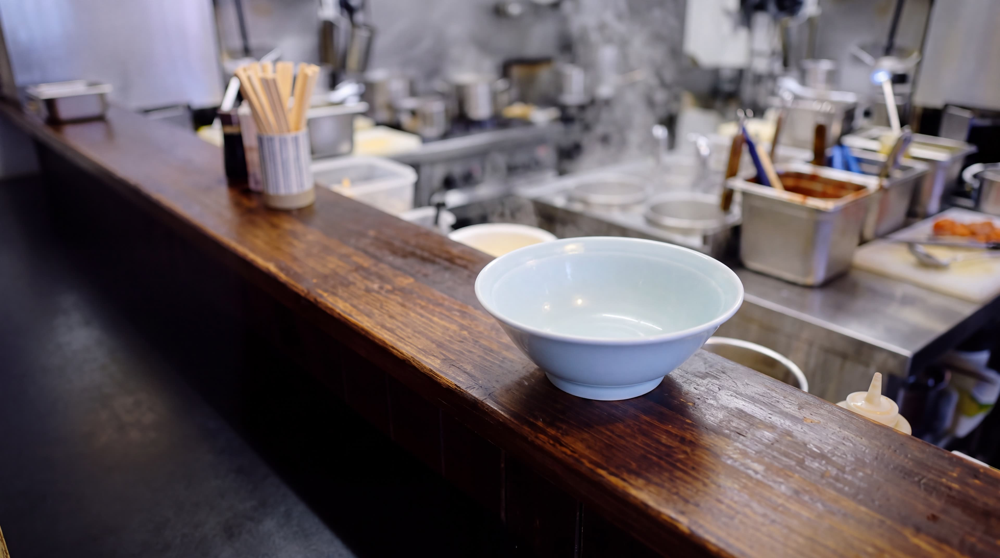
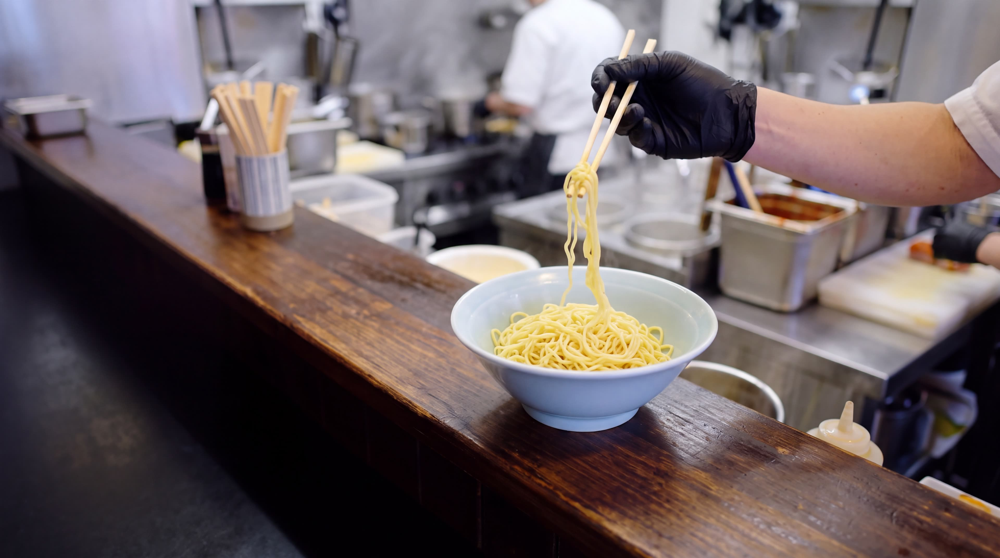
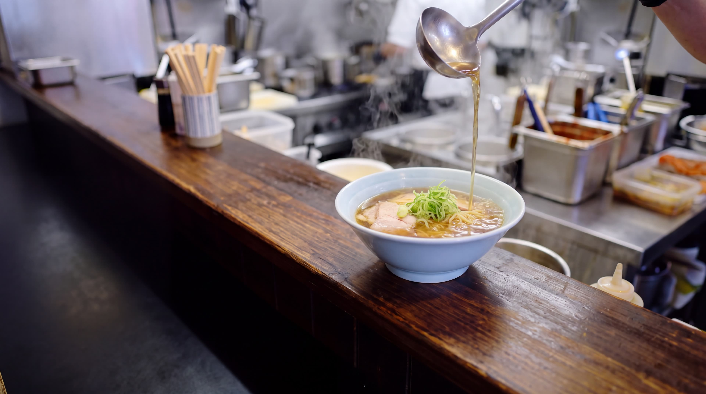
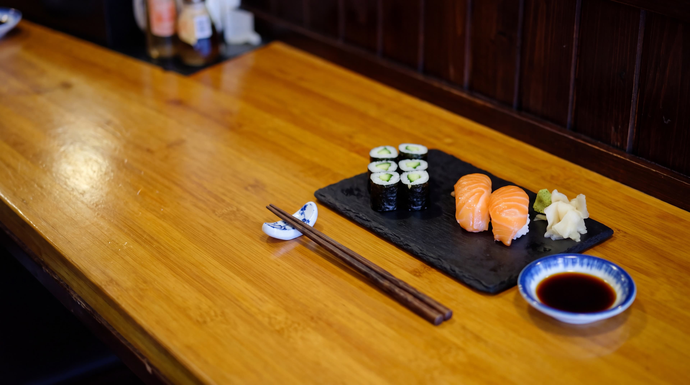

なにわ
NANIWA
Japanische Küche in Düsseldorf seit 1986
自家製麺
Jeden Tag hausgemacht
Unsere Ramennudeln entstehen täglich nach eigener Rezeptur mit japanischem Mehl.
スープ
Täglich frische Brühe
Seit über dreißig Jahren jeden Morgen frisch aufgesetzt, aus regionalen und natürlichen Zutaten.
寿司
Gegenüber: Sushi & More, seit 2004
Die kleine Schwester auf der anderen Straßenseite. Über 70 Kreationen, immer frisch.
Scrollen